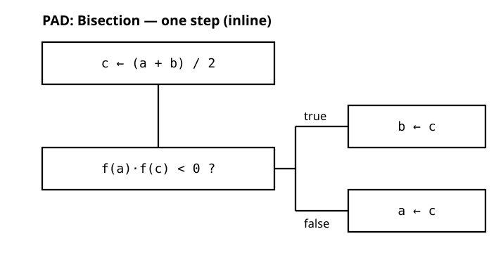

3 < 5 # is 3 less than 5?true今回の背骨は 条件分岐，すなわち「状況によって違うことをする」仕組みである． そのために，まず 比較演算と論理型 Bool，そして 論理演算（かつ・または・否定）を学び， それらを使って if 文 を書く． 仕上げに，はさみうち法（区間を半分にして根を挟みこむ方法）を ベタ書きで体験する． キーワードは 「条件で分かれ，同じステップを繰り返して挟みこむ」．
比較演算子 は「左右の大小・等しさ」を調べ，その結果は数ではなく true（真） か false（偽） という 論理値（Bool 型）になる． true/false は第1回で顔見せ済みだが，今回が主役である．
3 < 5 # is 3 less than 5?true2 == 2 # are the two sides equal? (== is comparison; = is assignment)true主な比較演算子は，<（より小さい），>（より大きい）， <=（以下，≤ とも書ける），>=（以上，≥ とも書ける）， ==（等しい），!=（等しくない）である．
2 <= 2 # is 2 less than or equal to 2?true3 ≤ 5 # ≤ is the same as <= (type \le then Tab)true0.1 + 0.2 == 0.3 は true だろうか．実行する前に予想しよう．
0.1 + 0.2 == 0.3falsefalse になる．小数はコンピュータ内部（浮動小数点数）では ぴったりは表せず，わずかな誤差を含むためである． くわしくは第10回（浮動小数点と数値誤差）で扱う． 今は「小数どうしを == で厳密に比べない」とだけ覚えておけばよい．
ここは 発展（必修ではない）．読み飛ばして，次の 「論理演算」 へ進んでよい．
Julia では数学と同じように，比較を 連ねて書ける． 1 < 3 < 5 は「1 < 3 かつ 3 < 5」の意味になる．
1 < 3 < 5 は何になるか？ また 5 < 3 < 1 はどうか？
1 < 3 < 5 # chained comparisontrue5 < 3 < 1 # and this one?false「a < x < b（x が a と b の間にあるか）」のように， 範囲に入っているかの判定 によく使う．
複数の条件を 組み合わせる には 論理演算子 を使う．
&& … かつ（and）：両方が true のときだけ true．|| … または（or）：どちらか一方でも true なら true．! … 否定（not）：true と false を入れ替える．true && false # andfalsetrue || false # ortrue!true # notfalse比較と組み合わせると，意味のある判定が書ける．
x = 7 のとき，(x > 0) && (x < 10) と (x < 0) || (x > 5) は何になるか？
x = 7
(x > 0) && (x < 10) # positive and less than 10true(x < 0) || (x > 5) # negative or greater than 5true&& と & は別物
条件をつなぐ「かつ」は &&（2つ重ねる） を使う． &（1つ）はビット演算という別の演算で，意味も挙動も違う． 論理の「かつ・または」は &&・|| と覚えること．
if 文 を使うと，条件が true のときと false のときで 違う処理を実行できる．基本形は if … elseif … else … end である． 上から順に条件を調べ，最初に true になった枝だけを実行する．
println には，" で囲んだ 文字列（文字の並び）も渡せる．
x = 7
if x > 0
println("positive")
elseif x < 0
println("negative")
else
println("zero")
endpositivex が 7 なので最初の条件 x > 0 が true となり，positive が表示される． println は値を画面に出力する命令である（戻り値は使わない）．
上の x を 0 や -3 に変えたら，何が表示されるか予測してから確かめよう．
=（代入）と ==（比較）の混同
条件には 比較の == を使う．if x = 5 のように 代入の = を書くと， 意図（「x が 5 か？」）と違う意味になり，エラーや誤動作のもとになる． = は代入，== は比較．第1回からの鉄則である．
break：条件が成り立ったら繰り返しを抜ける第3回の for は，用意した値を 最後まで 走査する． しかし「もう続ける必要がない」と途中で分かることがある． そのとき break を書くと，残りを飛ばしてループを抜ける． if と組み合わせて使う．
次のループは，xs のどこまで見て止まるか．何が表示されるか．
xs = [3, 8, 12, 5, 20]
for x in xs
println(x)
if x > 10
break # stop as soon as the condition holds
end
end3
8
12最初に 10 より大きい値（12）に出会った時点で抜けるので，5 と 20 は見ない． 「全部見る」のか「見つけたら止める」のかは，書き手が決めることである．
第3回で 反復（くり返し）の箱 を図に描いた．今回 分岐の箱 が加わり， 逐次，反復，分岐という 3つの制御構造 がそろう． 図は，自分の考えを整理するために描く．提出はコードと説明でよい． 大事なのは「コードが図のとおりになっているか」を見比べることである．
図は紙に描いてもよいし，Web アプリの Excalidraw（https://excalidraw.com）で描いてもよい（登録は要らない）． Excalidraw で描いた図を notebook に入れるときは，次のようにする．
 のように attachment: と書かれていれば，図は notebook の中に入っている． ../Downloads/pad.png のようなファイルの場所が書かれていたら入っていない（画像ファイルをドラッグして入れたときに起こることがある）．Ctrl+V で貼り付け直す．方程式 \(f(x)=0\) の解（根）を，区間を半分ずつ狭めて追いつめる方法を はさみうち法（二分法）という． ここでは \(f(x)=x^2-2\) の正の根，すなわち \(\sqrt{2}\) を挟みこむ．
考え方は単純である．根を含む区間 \([a, b]\) の 中点 \(c\) で \(f(c)\) の 符号を調べ， 根がある側の半分に区間を取り替える．これを繰り返すと区間がどんどん縮む．
まず \(y=f(x)\) のグラフを描き，出発の区間 \([1, 2]\) を \(y=0\) の線の上に太い線分で重ねる． 根は，曲線が \(y=0\) を横切る点である．
x = range(0, 3, length=100)
plot(x, x.^2 .- 2, label="f(x) = x^2 - 2") # the curve
plot!([0, 3], [0, 0], label="", color=:gray) # the line y = 0
plot!([1.0, 2.0], [0, 0], label="[1, 2]", linewidth=6) # the starting interval![]()
plot と plot! には，線の見た目を決める指定を 名前=値 の形で足せる． ここで初めて使ったのは次の3つである．
label="..."：凡例（図の中の，線の名前の一覧）に出す名前．label="" なら凡例に出さない．color=:gray：線の色（ここでは灰色）．linewidth=6：線の太さ．数が大きいほど太い．出発の区間 \([a, b]\) は，端点で \(f\) の符号が逆でなければならない （\(f(a)<0\) かつ \(f(b)>0\)，など）．まずそれを確かめる．
a, b = 1.0, 2.0 # both ends at once (simultaneous assignment, lesson 5)
a^2 - 2 # f(a), that is f(1)-1.0b^2 - 2 # f(b), that is f(2)2.0符号が逆なので，区間 \([1.0, 2.0]\) の中に根がある．では 1ステップやってみる． 中点 \(c\) をとり，両端と中点の符号の積 \(f(a)\cdot f(c)\) を見て，根がある半分に区間を狭める．
中点 \(c=1.5\) で，\(f(a)\cdot f(c)\) の符号はどうなるか？ （\(f(a)=1^2-2<0\)，\(f(c)=1.5^2-2\)）． それに応じて，次の区間は \([1.0, 1.5]\) と \([1.5, 2.0]\) のどちらになるか予測しよう．
a, b = 1.0, 2.0 # interval with f(a)*f(b)<0 (signs differ at the two ends)
c = (a + b) / 2 # midpoint
fa = a^2 - 2 # f(a)
fc = c^2 - 2 # f(c)
if fa * fc < 0
b = c # signs differ on [a, c] → root is in [a, c] → move right end to c
else
a = c # otherwise the root is in [c, b] → move left end to c
end
[a, b] # interval has shrunk by half2-element Vector{Float64}:
1.0
1.5\(f(1.0)\cdot f(1.5) = (-1)\times 0.25 < 0\) なので 真の枝に入り，右端が \(1.5\) になって区間は \([1.0, 1.5]\) に縮む． \(\sqrt{2}\approx 1.414\) は，この区間の中にある．
曲線 \(y=f(x)\) と区間を重ねて描くと，区間が半分になったことと，曲線が \(0\) を横切る点（根）が新しい区間に残っていることが，目で確かめられる． 区間は，\(y=0\) の線の少し下に，横向きの太い線分で描く（上が最初の区間，下が1ステップ後の区間）．
x = range(0.8, 2.2, length=100)
plot(x, x.^2 .- 2, label="f(x) = x^2 - 2") # the curve; the root is where it crosses 0
plot!([0.8, 2.2], [0, 0], label="", color=:gray) # the line y = 0
plot!([1.0, 2.0], [-0.4, -0.4], label="start [1.0, 2.0]", linewidth=6)
plot!([a, b], [-0.8, -0.8], label="after one step [a, b]", linewidth=6)![]()
この「中点をとる → \(f(a)\cdot f(c)\) の符号を見る → 区間を半分にする」という1ステップを図にすると 図 1 のようになる．

b ← c，そうでなければ a ← c．
同じ図を Excalidraw で開くこともできる（https://excalidraw.com/#json=Ezmbhg68OPt-h6ZZTjuto,OtyRHLcq5kCTeCS3KTwY2Q）． 開いて書き換えても元の図は変わらないので，自分の PAD を描くときの出発点に使える．
いま書いた「中点をとる → 符号を見る → 区間を半分にする」は， まったく同じ手順をもう一度やれば，さらに区間が縮む． このコードを そのままコピーして続けてみよう（手で数回回す）．
a, b = 1.0, 2.0
# --- step 1 ---
c = (a + b) / 2
fa = a^2 - 2
fc = c^2 - 2
if fa * fc < 0
b = c
else
a = c
end
println("step 1: [", a, ", ", b, "] width = ", b - a)
# --- step 2 (copy the same procedure) ---
c = (a + b) / 2
fa = a^2 - 2
fc = c^2 - 2
if fa * fc < 0
b = c
else
a = c
end
println("step 2: [", a, ", ", b, "] width = ", b - a)
# --- step 3 (same procedure again) ---
c = (a + b) / 2
fa = a^2 - 2
fc = c^2 - 2
if fa * fc < 0
b = c
else
a = c
end
println("step 3: [", a, ", ", b, "] width = ", b - a)step 1: [1.0, 1.5] width = 0.5
step 2: [1.25, 1.5] width = 0.25
step 3: [1.375, 1.5] width = 0.125回すたびに 区間の幅が半分になり，\(\sqrt{2}\) をだんだん細かく挟みこんでいく．
sqrt(2) # check the answer: the interval brackets this value1.4142135623730951もし出発の区間が 同符号（たとえば \(f(a)\) も \(f(b)\) も正）だったら， 「符号が変わる場所」が区間内にあるとは限らず， はさみうちは 偽の答えに収束したり破綻したりする． 始める前に端点の符号を確認する．これが前提である．
上で 同じコードを3回コピーしたのが気になっただろう． 「同じステップを何度も繰り返すなら，ひとまとめにして名前を付けたい」． これが 関数の発想である． 次回（第7回）では，このはさみうち1ステップを 関数として括り出す．
<，>，==，<=/≤ など）の結果は 論理型 Bool（true/false）．== は信用しない：0.1 + 0.2 == 0.3 は false（浮動小数点の誤差，第10回）．a < x < b は「a<x かつ x<b」．&&（かつ）・||（または）・!（否定）で条件を組み合わせる（& とは別物）．if … elseif … else … end は，最初に true になった枝だけを実行する（= と == を混同しない）．temp = 18 のとき，次の if 文が何を表示するか予測してから確かめよ．
if temp >= 30
println("hot")
elseif temp >= 15
println("warm")
else
println("cold")
end(3 < 5) && (0.1 + 0.2 == 0.3) の値を予測してから確かめよ．
はさみうちを あと2回手で回し（コードをコピー），区間の幅を表にまとめよ．何回目で幅が \(0.1\) より小さくなるか？
本文では f(a) * f(c) < 0 のとき b = c，そうでなければ a = c とした．分岐の 条件の立て方 は一通りではない．では f(a) * f(c) > 0 を採用するなら，a と b をどう更新すればよいか考えよ（「解の存在範囲を狭める」考え方は変わらない；結果も同じになるはず）．その版の PAD も描いてみよ（描き方は「補足：アルゴリズム図に『分岐の箱』を足す」．本文の PAD 図を Excalidraw で開いて書き換えてもよい）．
自分で考える．近くの人と話し合う．
f(x) = x^2 - 2 で区間 [-2, 2] を選ぶと，両端で f が同じ符号になり，はさみうちを始められない．
f(x) = x^2（根は 0）ならどうか．